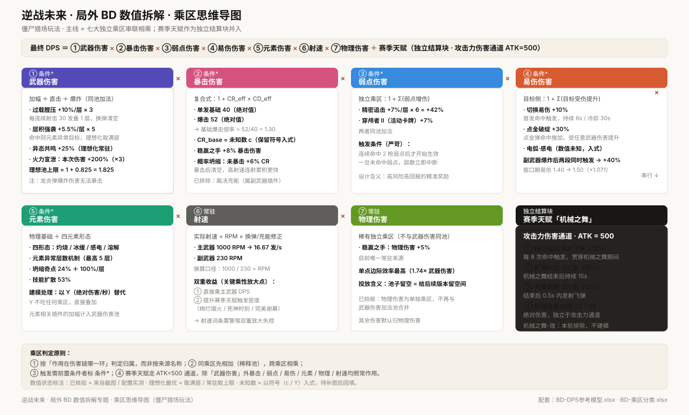
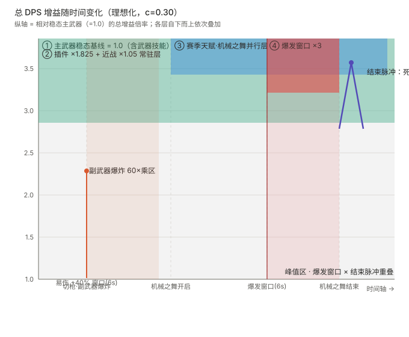

逆战未来 · 局外 BD 数值拆解
以「乘区模型」为骨架，把《逆战未来》局外构筑（Build）的数值加成拆解为可独立相乘的七大乘区；赛季天赋走「攻击力伤害通道」独立结算；在此基础上推导「最优化攻击流程」的模型上限，用于校验数值投放是否合理、是否越过预期天花板。
目录
零、专题概览与方法论
拆解目标
把局外构筑的所有数值加成归入统一乘区模型，明确「同乘区先相加（稀释）、跨乘区相乘」的判定原则，为数值平衡提供可复现的公式骨架。
核心方法
按「作用在伤害链哪一环」判定乘区归属，而非按来源名称。物理伤害、弱点伤害等此前被合并的维度，现已独立成稀有乘区。
模型上限
最优化攻击流程的本质是求「模型上限」——大部分玩家操作与波动数值取其理性化最优，以判断数值投放是否合理、是否越过预期天花板。
一、乘区框架 · 七大独立乘区
最终 DPS 由七个独立乘区自上而下相乘，另加「赛季天赋」作为独立结算块（走攻击力伤害通道）。带 条件* 标记者为条件乘区，需前置触发条件才生效。
武器伤害加幅 + 武器直击伤害 + 武器爆炸伤害，三者同池加法（含注释：龙炎弹的爆炸伤害无法暴击）。
CR × CD 复合乘区，CR_base / CD_base 作未知数入式；概率坍缩动态充能（裁决充能已排除，属副武器插件）。
精密追击 +7%/层×6 + 穿颅者 II +7%，同池加法；连续命中弱点生效，未命中即中断。
目标侧受伤害提升：切换易伤 +10% + 点金破绽 +30% + 电弧·感电，同池加法。
物理基础 + 四元素形态（灼烧 / 冰缓 / 感电 / 溶解）+ 元素异常层数机制（最高 5 层）。建模以未知数 Y（绝对伤害/秒）替代。
RPM × 换弹 / 充能修正。主武器 1000 RPM、副武器 230 RPM；射速同时提升赛季天赋触发密度（双重收益）。
稀有独立乘区，稳赢之手物理伤害 +5%，单独存在，不与武器伤害同池。

图 1 乘区思维导图：主线由七大乘区串联相乘，每个乘区分支出其影响因子；右下为赛季天赋独立结算块。
二、DPS 公式骨架
各乘区展开
| 乘区 | 公式展开 | 关键参数 |
|---|---|---|
| 武器伤害 | 1 + Σ(加幅 + 直击 + 爆炸)，同池加法 | 过载膛压 +10%/层×3、层积强袭 +5.5%/层×5、异态共鸣 +25%、火力宣泄 ×3 窗口 |
| 暴击伤害 | 1 + CR_eff × CD_eff | 单发 40、爆击 52 → 基础爆击倍率 1.30；CR_base = 未知数 c；稳赢之手 +8% CD；概率坍缩（裁决充能已排除） |
| 弱点伤害 | 1 + Σ(弱点增伤)，同池加法 | 精密追击 +7%/层×6、穿颅者 II +7% |
| 易伤伤害 | 1 + Σ(目标侧增伤)，同池加法 | 切换易伤 +10%、点金破绽 +30%、电弧·感电 |
| 元素伤害 | 建模以 Y 替代（绝对伤害/秒，不吃乘区） | 层积强袭、坍缩奇点 24%+100%/层、技能扩散 53%（相关插件加幅计入武器伤害池） |
| 射速 | RPM × (1 - 换弹 / 充能修正) | 主武器 1000 RPM、副武器 230 RPM |
| 物理伤害 | 1 + 物理增伤，稀有独立 | 稳赢之手 +5% |
三、赛季天赋「机械之舞」· 攻击力伤害通道
四子技能结构（机械之舞-改本轮排除不建模）
| 子技能 | 触发方式 | 实际伤害（ATK=500） | 受射速影响 |
|---|---|---|---|
| 绚烂烟火 | 贯穿机械之舞整个期间，每 8 次命中触发一枚飞弹（12%） | 60 / 飞弹 | 是（命中频率） |
| 死神时刻 | 机械之舞结束后持续 15s（10%） | 50 / 发 | 是 |
| 完美谢幕 | 机械之舞结束后 0.5s 内发射飞弹（13%） | 65 / 发 | 是 |
| 机械臂重机枪 | 绝对伤害（独立于攻击力通道） | 22 / 26 | — |
四、最优化攻击流程推导
目标函数 = DPS 最大化 + 爆发窗口总伤最大化（双目标）。大部分玩家操作与波动数值取其理性化最优，本质是求模型上限。
1优化目标定义
两个目标通过「技能周期」统一：一个完整机械之舞周期内，既看平均 DPS，也看技能窗口内的爆发峰值。
2时间轴骨架（一个技能周期）
关键：机械之舞是并行时间轴，不与主武器串行阻塞；绚烂烟火在期间与主武器射击叠加；死神时刻与完美谢幕在结束时同时触发，三者伤害均受同一时间轴射速影响。
3主武器火力宣泄 · 模式切换排轴
火力宣泄机制：架设模式攒层（累计开火 10 次 +10 层，最多 300 层），机枪模式命中消耗 3 层使本次伤害 +200%（不足 3 层消耗全部）。
4副武器 · 纯辅助 + 一次性技能爆炸
副武器在此 BD 中只做辅助：对主武器增伤 + 上易伤，不自算独立 DPS。
优化结论：副武器技能的爆炸伤害与主武器一样吃全部乘区（走武器技能伤害通道，非 ATK=500 攻击力通道）；爆炸后上易伤 +40% 覆盖主武器 6s。最优在爆发窗口前切枪释放——爆炸叠乘窗口 ×3 同窗，且 +40% 易伤全程覆盖主武器爆发窗口，代价 1s 时间损失。
5易伤叠加 · 切枪代价权衡
副武器主动技能那发爆炸弹命中后，同时叠加两段易伤：切换易伤 +10% + 点金破绽 +30% = +40%（同池加法），覆盖窗口 6s（切换易伤口径，冷却 30s）。
6暴击乘区 · 概率坍缩充能优化
| 插件 | 机制 | 最优条件 |
|---|---|---|
| 概率坍缩 | 未暴击 +6% CR，暴击清空 | 高射速 + 低基础暴击 → 累积更快，适合机枪模式连射 |
优化结论：概率坍缩在「机枪连射」阶段累积更快，因此最优节奏应把高射速连射集中在其后需要高暴击的阶段。
7综合最优流程（模型上限）
8代入实数的 DPS 骨架（可计算）
设爆击率 = 未知数 c，主武器射速 = 16.67 发/s，代入已确定的单发 40、爆击倍率 1.30 及乘区常量：
9反思与分析：等价换算 + 模块增益占比
基于当前主武器稳态（c = 0.30 占位），推导出各乘区「+1% 投放」对 DPS 的相对增量，作为策划投放的统一标尺。完整推导见配套分析稿 equivalence-and-module-share.md。
增益曲线 · 时间轴叠加
各模块增益在同一条时间轴上的形态叠加。峰值出现在「火力宣泄爆发窗口（×3）与机械之舞结束瞬间（死神时刻 + 完美谢幕同发）」重叠处。

图 2 总 DPS 增益随时间变化：自下而上分层叠加各模块增益，红底列即峰值区。
五、待核验清单（25 项 + 紧急标记）
状态按「未知数代入建模 / 理想化最优 / 已拍板 / 已核验 / 已排除」分类，紧急项标红。
| # | 对象 | 待核验问题 | 状态 | 优先级 |
|---|---|---|---|---|
| 1 | 全局 | 攻击力伤害通道：ATK 固定值 + 单发 40 / 爆击 52 | 已核验 ATK=500 | 紧急 |
| 2 | 主武器 | 火力宣泄满 buff 窗口时长与层数恢复节奏 | 理想化最优 | — |
| 3 | 主武器插件 | 同调稳持层数是否独立计时、是否命中刷新 | 理想化最优 | 紧急 |
| 4 | 主武器插件 | 技能扩散元素爆炸的伤害快照与目标数量 | 理想化最优 | 紧急 |
| 5 | 副武器插件 | 连击充能实际滑铲时间占比 | 理想化最优 | 紧急 |
| 6 | 副武器插件 | 暴击涌流触发频率与暴击率上限关系 | 具体数值未知 | — |
| 7 | 副武器插件 | 技能增幅 +60% 范围及子技能吃乘区口径 | 已拍板：与主技能一样吃乘区，口径不明确待回校 | 紧急 |
| 8 | 赛季天赋 | 机械臂重机枪（机械之舞技能效果）RPM 数值 | 具体数值未知 | — |
| 9 | 赛季天赋 | 元素伤害形态配置（统一以 Y 替代，元素相关插件进武器池） | 已用 Y 替代：Y = 绝对值/秒 | 紧急 |
| 10 | 赛季天赋 | 技能持续 8-12s 随叠层映射（是否线性） | 具体数值未知 | 紧急 |
| 11 | 赛季天赋 | 机械之舞-改完整机制与数值 | 已排除（本轮不建模） | — |
| 12 | 赛季天赋 | 死神时刻完整机制与数值 | 已核验 50/发 | — |
| 13 | 赛季天赋 | 完美谢幕按射速阈值取整规则 | 已核验 65/发 | — |
| 14 | 乘区 | 物理 / 暴击 / 武器 / 易伤 / 技能增幅的乘区关系 | 已拍板 | 紧急 |
| 15 | 乘区 | 点金破绽 +30% 与切换易伤 +10% 是否同属易伤 | 理想化最优 | — |
| 16 | 主武器插件 | 概率坍缩期望上限与典型轮换时长 | 具体数值未知 | — |
| 17 | 主武器插件 | 裁决充能（副武器插件） | 已排除 | — |
| 18 | 主武器插件 | 层积强袭层数维持时间与刷新规则 | 具体数值未知 | — |
| 19 | 主武器插件 | 异态共鸣单次 vs 常驻生效 | 理想化最优 | — |
| 20 | 主武器插件 | 坍缩奇点爆炸目标数与伤害快照 | 具体数值未知 | — |
| 21 | 元素机制 | 坍缩奇点与技能扩散元素爆炸是否同池 | 理想化最优 | — |
| 22 | 元素机制 | 电弧·感电与切换易伤 / 点金破绽是否同属易伤 | 具体数值未知 | — |
| 23 | 伤害类型 | 物理伤害与武器伤害加法池是否同池 | 已拍板 | 紧急 |
| 24 | 乘区（新增） | 弱点伤害乘区：精密追击触发条件与层数 | 已核验数值 | — |
| 25 | 乘区（新增） | 弱点伤害乘区：穿颅者 II 卡牌 +7% | 已核验数值 | — |
六、全局确认与复盘
已确认的口径
| 维度 | 结论 |
|---|---|
| 乘区结构 | 七大独立乘区相乘（武器伤害 / 暴击 / 弱点 / 易伤 / 元素 / 射速 / 物理），赛季天赋为独立结算块 |
| 赛季天赋 | 走「攻击力伤害通道」，ATK = 500 固定，除武器伤害外其余乘区照常作用；机械之舞并行时间轴 |
| 物理伤害 | 稀有独立乘区，不再与武器伤害同池（已拍板） |
| 武器伤害 | 加幅 + 直击 + 爆炸三者同池加法；龙炎弹爆炸无法暴击 |
| 弱点伤害 | 新设独立乘区，精密追击 + 穿颅者 II 同池加法 |
| 暴击伤害 | 单发 40 / 爆击 52 → 基础爆击倍率 1.30；裁决充能已排除，仅概率坍缩一个金插件 |
| 技能框架 | 机械之舞主技能 → 四子技能（绚烂烟火 / 机械之舞-改[排除] / 死神时刻 / 完美谢幕），死神时刻 + 完美谢幕同时触发 |
| 切枪 / 技能代价 | 副武器主动技能时间损失 1s（切枪 + 动作） |
| 副武器 | 纯辅助：主动技能（切出 → 爆炸弹 → 切回，1s）爆炸基础 60 吃乘区 + 爆炸后上易伤 +40%（切换 10% + 点金 30%） |
| 元素伤害 | 以未知数 Y（绝对伤害/秒）入式，不吃任何乘区；元素相关插件加幅计入武器伤害池 |
仍需补充的参数（P0）
- 机械臂重机枪 RPM（#8）—— 额外武器 DPS
- 聚能额外属性配置（#9）
- 火力宣泄窗口时长（#2）—— 爆发窗口总伤计算基础
- 技能持续叠层映射是否线性（#10）
复盘发现的三个乘性放大点
设计与体验反思（不只是解题）
前面的推导回答「数值是多少」，这里回答「为什么这么配」和「对玩家体验意味着什么」——从设计者与玩家两个角度回看整套数值。
一、设计意图推测：为什么这么配
| 数值现象 | 设计意图推测 |
|---|---|
| 武器伤害池堆到 1.825（+82.5%），物理仅 1.05、暴击池很小 | 武器伤害池「给得多」是因为它是主武器最直觉的成长线，方便玩家快速感知变强；物理 / 暴击池留空，是给后续版本 / 赛季卡牌预留的投放空间——若一开始就堆满，后续没有成长余地。 |
| 火力宣泄设计成「架设攒层 → 机枪消耗 ×3」的循环 | 用「先攒后爆」的节奏制造爆发爽点，同时用模式切换把「无脑连射」变成「需要排轴」——这是主动引导玩家学习节奏设计的意图。 |
| 射速同时影响主武器 DPS 和赛季天赋触发密度 | 让「射速」这个属性有双重性价比，引导玩家在插件 / 词条选择上优先堆射速——这是用数值耦合来强化养成方向的手段。 |
| 副武器主动技能代价 1s、上易伤 +40%、爆炸基础 60 | 副武器被设计成「辅助位」而非输出位：1s 的代价 + 高额易伤窗口，迫使玩家思考「什么时候切枪最划算」，形成主副武器的操作配合。 |
| 赛季天赋走 ATK=500 攻击力伤害通道（不吃武器伤害池） | 隔离机制：让赛季天赋的收益不受主武器武器伤害池影响，避免主武器变强时赛季天赋被顺带放大失控，也方便独立调节两个系统的强度。 |
二、玩家体验影响：这么配对体验有什么影响
三、数值投放合理性判断
判断：当前投放结构「先给直觉成长线（武器伤害），把高效率池（物理 / 暴击）留给后续」是合理的分层投放思路；但射速的双重收益是唯一需要警惕的隐性放大点。
七、配套产出下载
本专题的完整配套文件：两张 Excel 模型（按功能分类 / 按乘区分类）、两张图（乘区思维导图 / 增益曲线）、两份推导稿。均为静态版本，未知数值以参数形式入式，待补图 / 实测后回填。


说明：本专题的数值拆解基于游戏内实测与配置截图，所有未知数值均以参数形式入式（c / Y 等），标注为「具体数值未知」的条目待补图后回填；「理想化最优」取满层 / 常驻上限，用于求模型上限而非实际期望值。